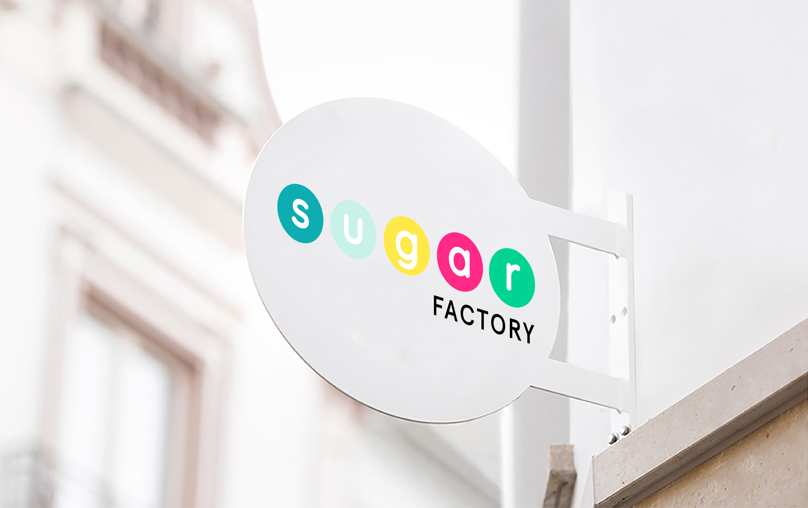
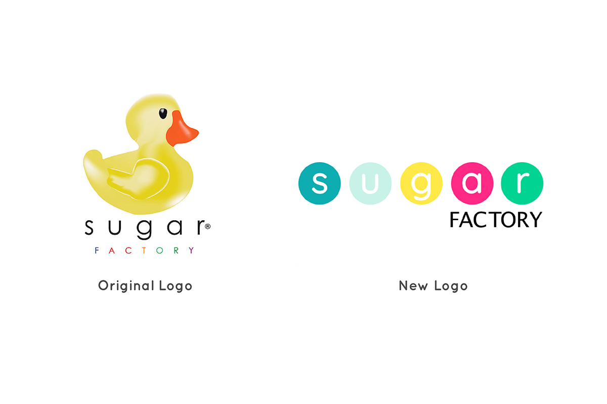
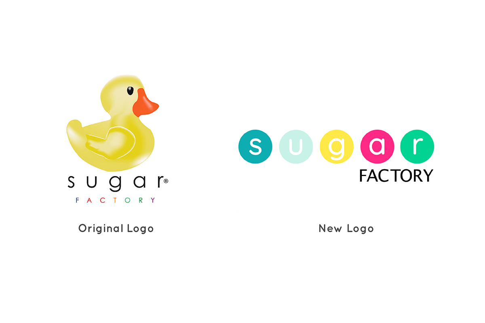
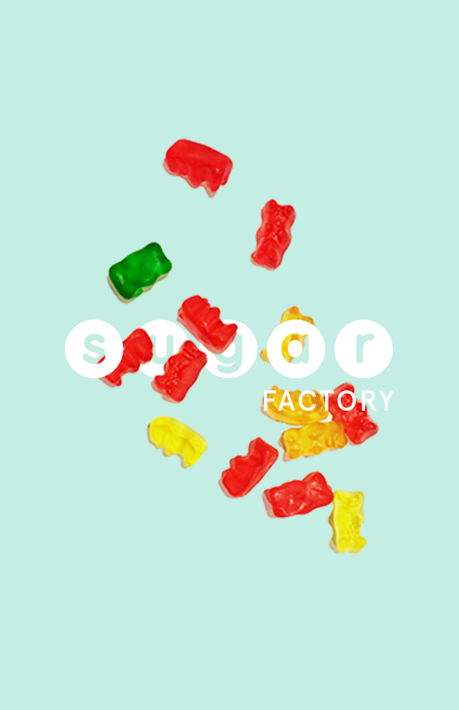
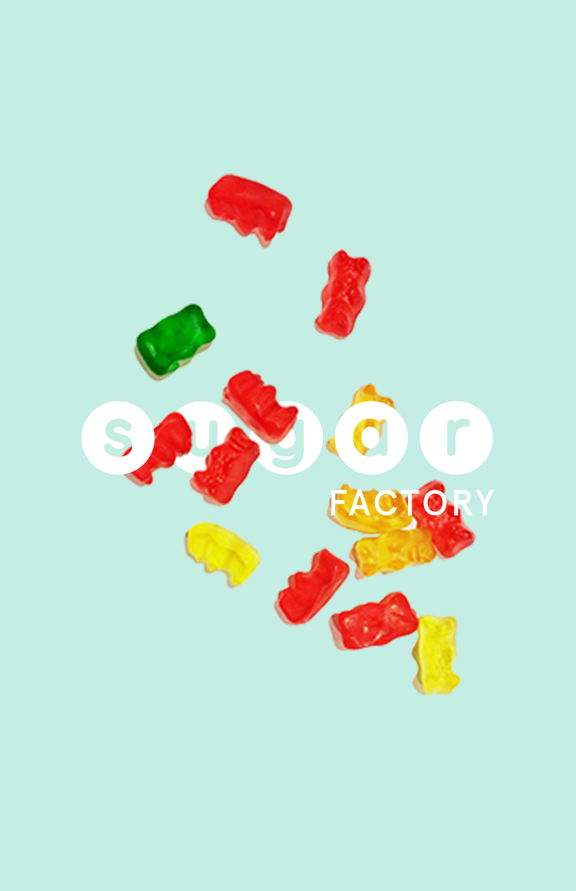

03
Sugar factory 2.0
Identity design
Package design
Food & beverage
Digital
Embark on a reimagined journey with the rebranded Sugar Factory, an enchanting candy-themed American brasserie nestled in the heart of NYC and Vegas. The rebrand captures the essence of joy and togetherness, bringing friends and families closer through a shared experience: with interactive food ordering and customization. By accentuating Sugar Factory's innovative culinary delights and dialing back unnecessary complexities, the goal is to emphasize where every bite and moment is a treasured memory waiting to be savored.

 

 
